LE LECTEUR, sérieusement perturbé je comprends rien. qui est le protagoniste ? pourquoi le narrateur est partout ? quelle est la bonne temporalité ? le chemin à suivre dans ce bourbier sans fin ? qu'est-ce que je suis censé tirer de tout ce bordel ? et surtout, pourquoi suis-je une partie de la pièce ? LE NARRATEUR, esquissant un sourire ça en fait, des questions. tenez, asseyez-vous : une chaise en plastique blanc se trouve à votre droite. ici, les contours sont mal dessinés, et encore trop flous pour être certains. vous arrivez à la partie la plus brouillardeuse de l'histoire, et je m'en excuse. mais c'est en ma qualité de narrateur que je ferai de mon mieux, pour décrire l'atmosphère qui régit ce lieu. ne suis-je pas vos yeux et vos oreilles ? LE LECTEUR, s'asseyant, sans plus de cérémonies j'étais incapable de me manifester, avant ça. je n'ai pas l'impression que ce soit une coïncidence. LE NARRATEUR je ne suis là que pour conter l'histoire qui vous amène à exister, ici, au sein du récit. vous vous demandez pourquoi vous n'existez que dans l'après. et vous n'êtes sans doute pas le premier human à être victime d'une crise existentielle, aussi minime soit-elle. votre raison d'être dans cette histoire n'est peut-être pas si profonde que ça. et le narrateur, aussi omniscient soit-il, n'est pas en mesure de répondre à toutes les questions. celui qui détient tous les secrets de l'univers, c'est l'auteur. L'AUTEUR, tapant ses propres répliques peu importe le sens métaphorique qui mène le lecteur à se demander pourquoi il n'intervient que dans l'après : l'histoire prend son sens précisément quand on décide de ne pas lui en donner. elle se fraie un chemin à travers chaque conscience, d'une manière unique, qui résonne toujours d'une nouvelle façon, selon le lecteur qui tente de relier ces entrelacs de texte et d'images entre eux. c'est à ce moment précis que le lecteur devient auteur. c'est lui qui donne sa raison d'exister à l'œuvre, et pas l'inverse. 